Running the CPF Board Induction Escape Room
Everything a facilitator needs: what to set up, what each team sees on their phones stage by stage, when teams will come to you, and what to do when something goes wrong.
iOverview
The story: President Tharman is visiting CPF Board in 30 minutes, a network outage has wiped the two summary slides for his briefing, and each team has to rebuild them. Along the way new joiners pick up the Board's founding date, mission, vision, real department codes and headline numbers.
One phone per team runs the game. It is the only phone that can enter answers, and it remembers the team's progress.
Everyone else scans a QR code and follows along on their own phone. They see the same clues, live, but cannot type anything.
In Stage 4 a teammate opens a tilt game on another phone, which sits on a physical device that you hand out.
A combination lock, paper and pens, a tool for Stage 4A, the maze device and three crosswords. Teams come to you for most of these.
How a run works
- The team leader opens the game, names the team, and shows an invite QR code so teammates can join on their own phones.
- On your signal, every team starts. The clock starts at that moment.
- Teams work through five stages. The app checks each answer, and several stages send the team to a physical prop or to you.
- The final screen shows both rebuilt slides, the team's hand-drawn logo and their time. The team shows you that screen to finish.
1Before the session
Prepare one set of props per team. The app only checks answers, so the props are what make the room work.
- Combination lock. Set each 4-digit lock to 0107.
- Password note. Put a slip reading SECUREFUTURE inside whatever the lock secures.
- Paper and pens or markers for the logo drawing in Stage 3B. A green marker is a nice touch, since the description mentions the colour.
- The Stage 4A tool. Whatever you hand over on request that leads a team to the member figure, 4.3 million. Keep it with you. Teams are told to approach the facilitator for it.
- The Code Maze device for Stage 4B: the physical device the phone lies flat on, with sticks for at least three people to hold. Keep it with you as well.
- Three crossword puzzles per team for Stage 5. Their highlighted boxes unscramble to TRUSTED, RESPECTED and COMMITTED.
- Phones. Each team needs one leader phone, and at least one other phone for the Code Maze. Teammates' own phones are fine.
- The link to the game, as a QR code on a slide or a printed card:
gcwm-play.github.io/inductionescaperoom/
On the day, before teams arrive
- Check the network in the room. Open the game on your own phone, name a test team, and confirm that a QR code and a 6-character room code appear. If they do, live following works on that network.
- Check the Code Maze on a real phone. Open it, tap Start, allow motion access if asked, and tilt. The ball should roll.
- Reset your test. Tap Facilitator: reset progress at the bottom of the screen so your phone is clean.
- Lay out one prop set per team, and keep the Stage 4 and Stage 5 items at your station.
2Starting a team
Two screens come before the first puzzle. Hold every team on the second one until you are ready to start them together.
- Each team picks a leader, who opens the game link on their phone. Ask them to use a normal browser tab, not a private one.
- The leader reads the briefing aloud, types a team nickname and taps Begin the Rebuild.
- The Invite your team screen appears with a QR code and a room code. Teammates scan it with their phone cameras.
- When every team is on this screen and teammates have joined, give the signal. Leaders tap the gold button, which reads Wait for the facilitator's instructions before starting. Stage 1 appears and the team's clock starts.
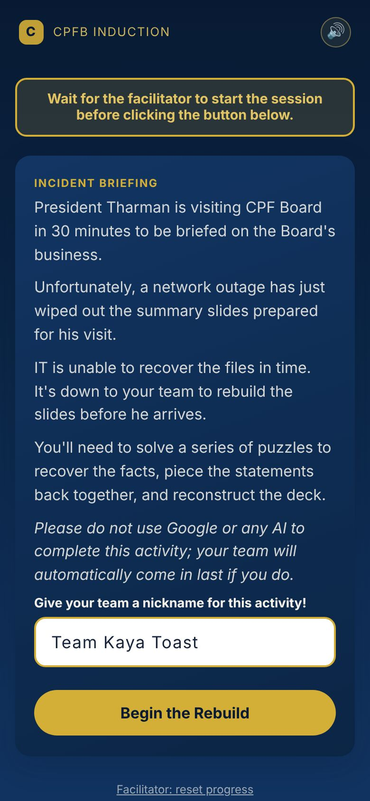
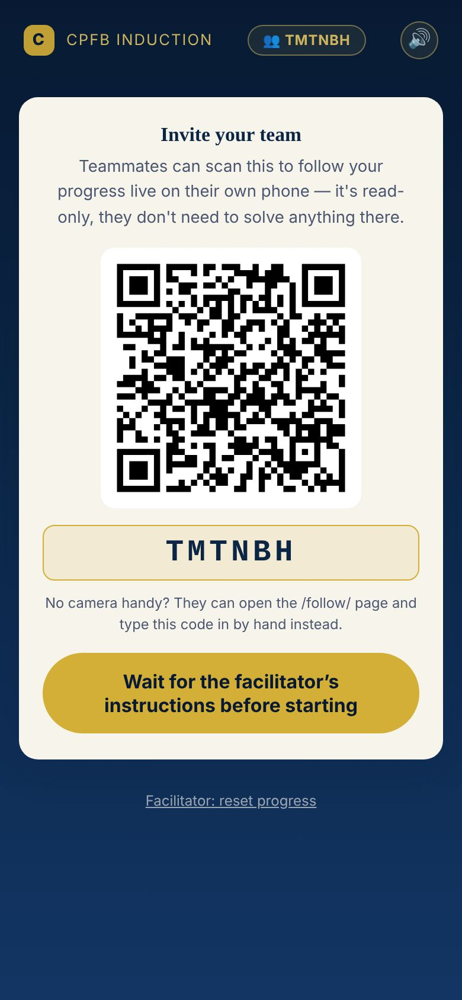
3Teammates following along
This stops one person from doing all the reading. Teammates see each stage's clues on their own phones the moment the leader reaches it.
- Joining. Scan the leader's QR code, or open
gcwm-play.github.io/inductionescaperoom/follow/and type the room code. - Read-only. Followers can read every clue but cannot answer. Answers go into the leader's phone.
- Live. The page shows ● Live — following Team Name and changes by itself when the leader moves on. A short chime plays on each change, once the follower has tapped their screen at least once and their phone is not on silent.
- Joining late. The leader taps the 👥 CODE badge at the top of their screen to show the QR code again at any time.
- Rejoining. The follow page remembers its room. A teammate who closes the tab can reopen it and carry on.
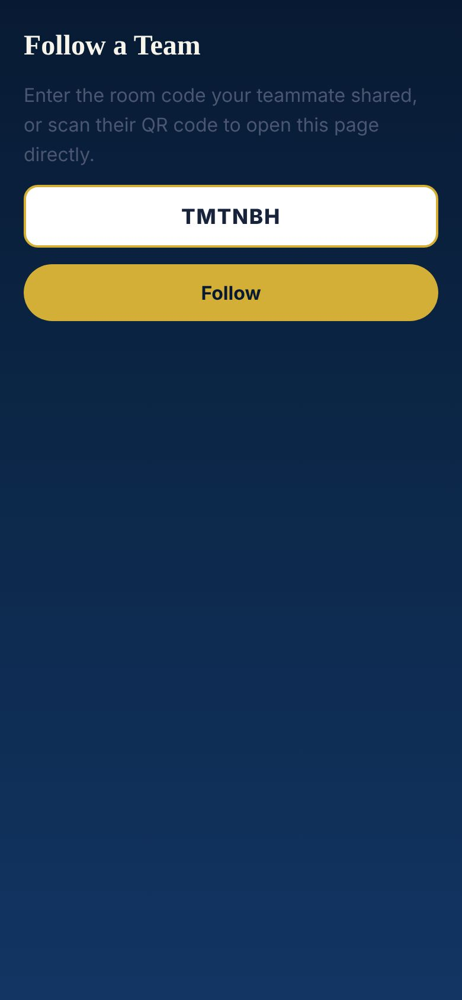
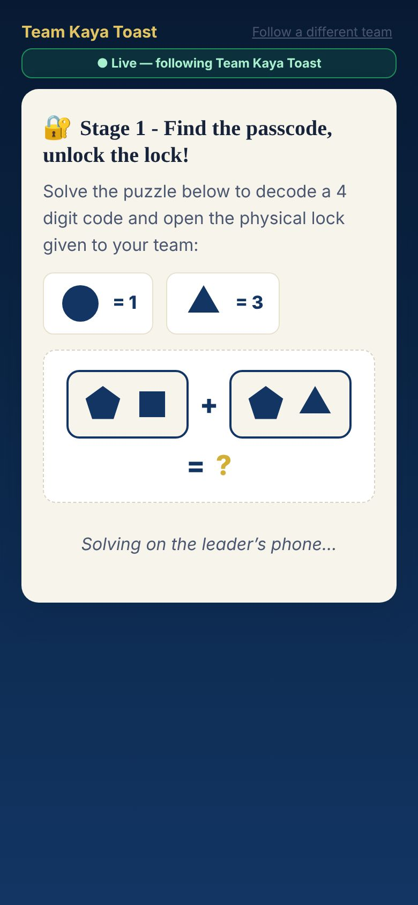
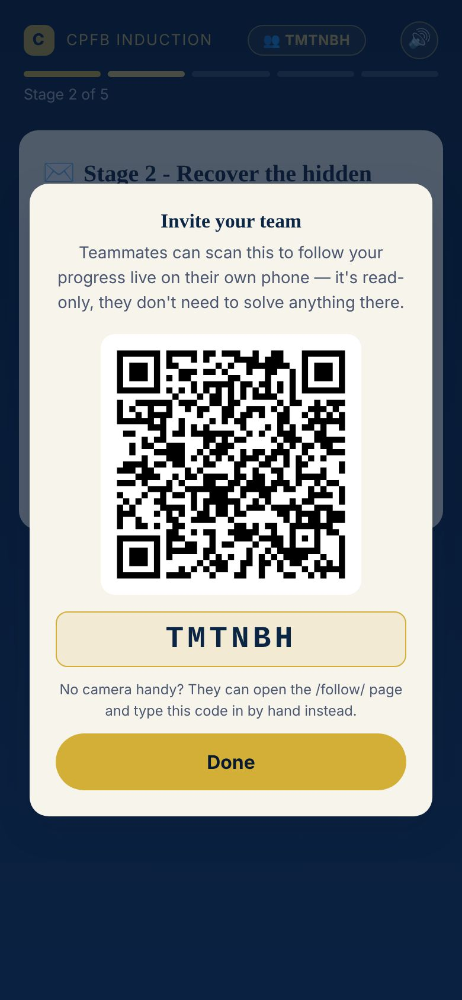
4Stage by stage
What the team sees and does at each stage, and what you need to do.
| Stage | What the team does | Prop | Your part |
|---|---|---|---|
| 1 · Passcode | Decode a shape puzzle into a 4-digit code and open the lock | Lock, password note | None, unless a lock jams |
| Password | Type the password found inside the lock | — | None |
| 2 · Emails | Find a hidden word in each of two emails | — | None |
| 3A · Departments | Pick the 5 real departments, then put the mission statement in order | — | Remind teams there is a second task |
| 3B · Logo | Draw the CPF Board logo from a description, then photograph it | Paper, pens | Watch for teams searching online |
| 4A · Members | Find the number of members served | Stage 4A tool | Hand over the tool when asked |
| 4B · Code Maze | Steer a ball through a maze on a second phone to get the number of projects | Maze device | Hand over the device when asked |
| 5 · Key words | Solve three crosswords to find three words from the vision | 3 crosswords | Hand over the crosswords when asked |
| Finale | Show you the finished slides | — | Note the time, then reset the phone |
🔐 Stage 1 · Find the passcode, open the lock
- See two example shapes with values, then a sum made of shapes.
- Work out the rule and type a 4-digit code. The fourth digit submits it.
- The app confirms the code, reveals that it is the Board's founding date, and sends them to the lock.
- They open the lock, find the password, tap I've opened the lock and type the password to "reconnect to the network drive".
- The rule: each shape is worth its number of sides, and a circle is 1. The sum is 54 + 53 = 107, entered as 0107.
- A team stuck for a long time usually has not noticed that two shapes side by side make a two-digit number.
- The password is not case-sensitive.
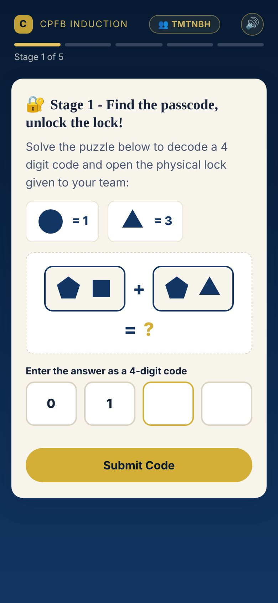
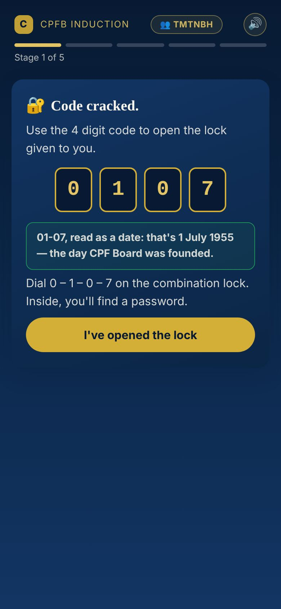
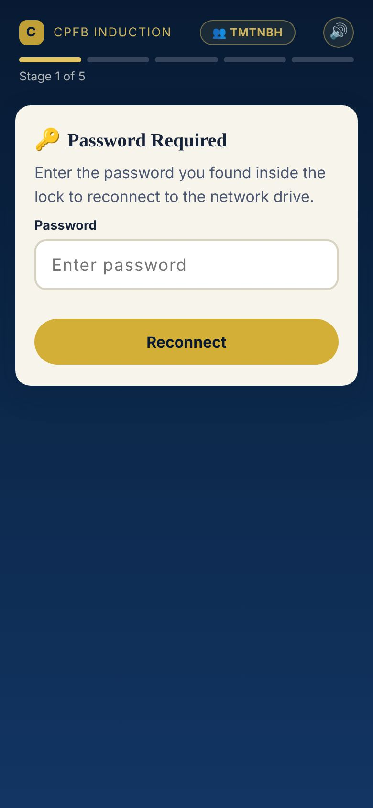
✉️ Stage 2 · Recover the hidden words
- See an inbox with two emails, one from IT Support and one from Mr Tang.
- Open each email, find the word hidden in it, and type it underneath.
- Both words must be confirmed before Continue appears.
- The first letter of each paragraph spells the word: MISSION in the first email, VISION in the second.
- Nothing physical here. If a team is stuck, suggest they look at how each paragraph begins.
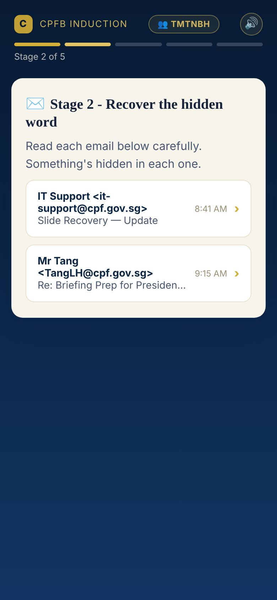
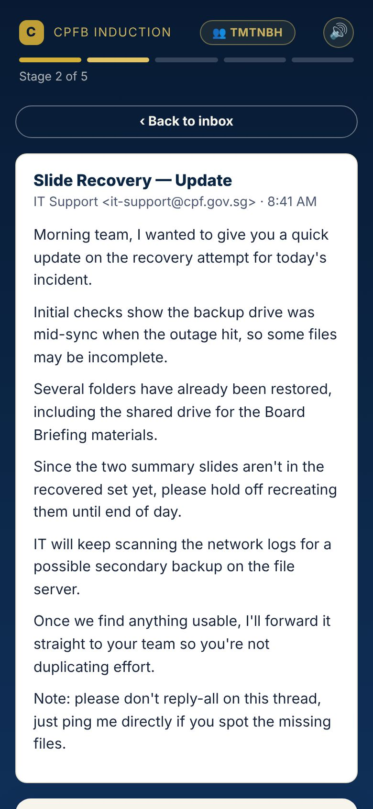
🧩 Stage 3 · Departments, mission statement and logo
- 3A: tick the 5 real CPF Board departments out of 21 folder codes and submit.
- A wrong try tells them how many of their ticks were right, for example "3 of your 5 selected departments are correct". It never says which ones.
- Once right, they tap five phrases into order to rebuild the mission statement.
- 3B, at the same time: a teammate draws the CPF Board logo on paper from a written description.
- After the mission statement, the leader photographs the drawing. It appears on the final slide.
- Give out paper and pens early, or leave them on the table.
- The logo must come from the description alone. Searching for the real logo breaks the no-Google rule.
- The photo step asks for camera access. The team must tap Allow.
- Followers see the mission phrases only after the leader has solved the departments, so nobody can skip ahead.
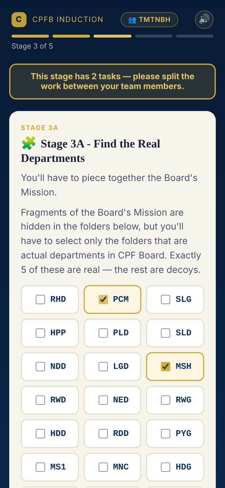
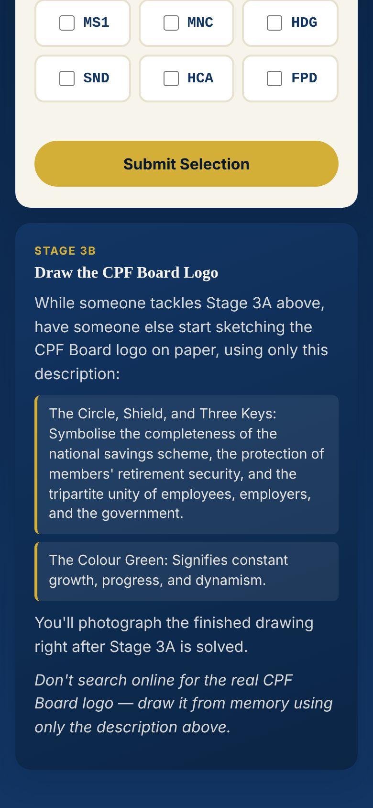
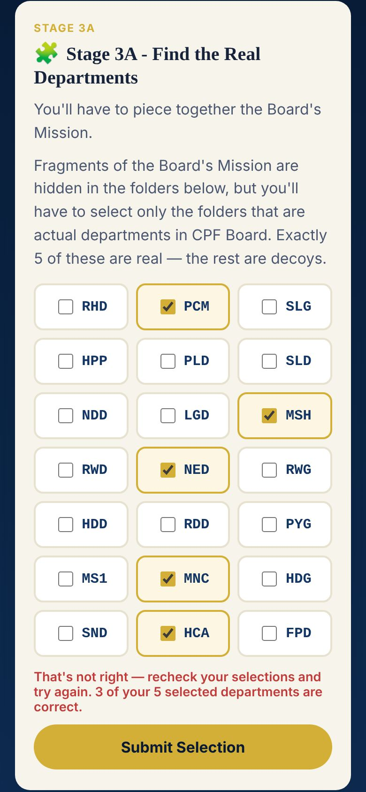
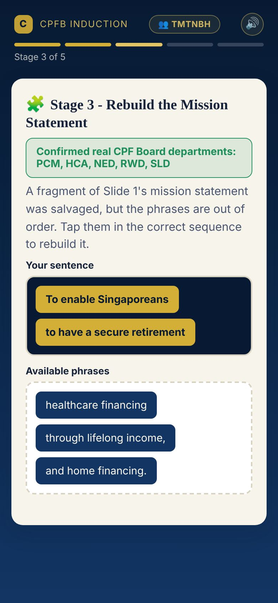
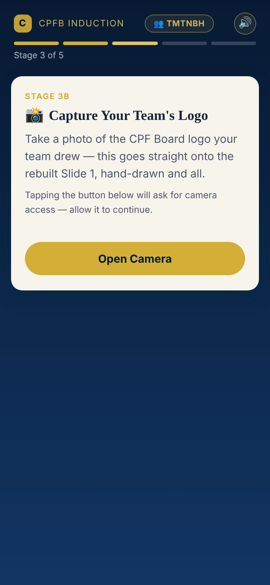
🔢 Stage 4 · The numbers
- 4A: approach you for a tool, use it to find how many million members the Board serves, and type the number.
- 4B: scan the QR code with a separate phone to open the Code Maze. Followers get a direct Open the Code Maze button instead.
- Collect the device from you, lay the phone flat on it, and have at least three people hold the sticks to steer the ball to the goal.
- The maze reveals a number, which goes back into the leader's phone.
- Both answers are needed before Continue appears.
- Hand out the 4A tool and the maze device on request, and collect them afterwards.
- On iPhones the maze asks for motion access after Start. The team must allow it.
- The device must be held level for a second after Start while the maze calibrates. If the ball drifts, tap ↺ on the maze with the device level.
- Falling into a hole sends the ball back to the start. The counter shows how many times.
- As each answer is confirmed, followers see it too.
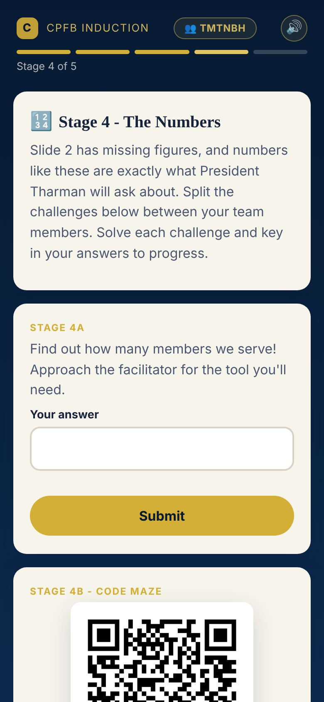
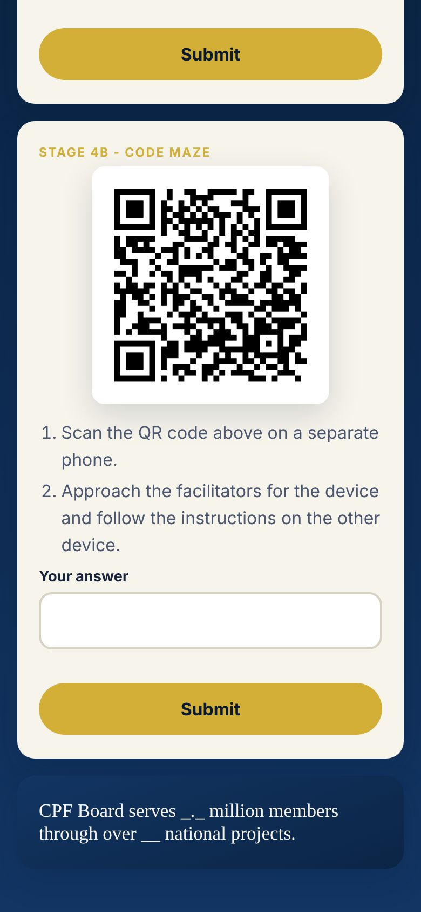
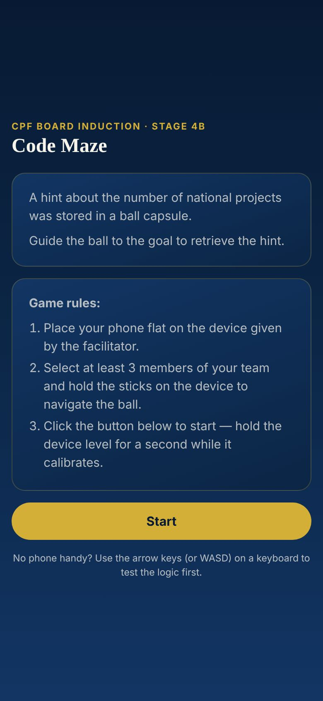
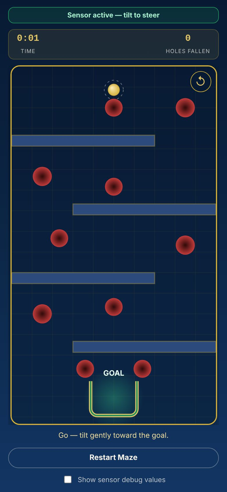
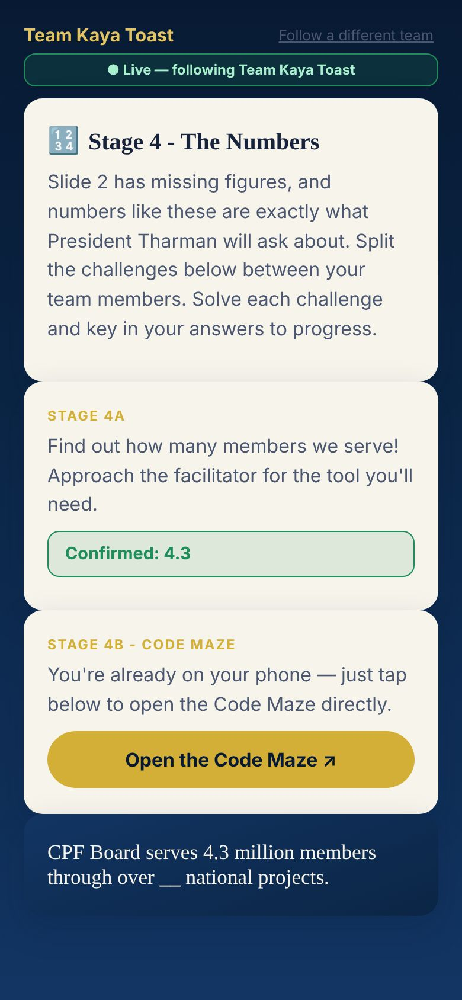
🔤 Stage 5 · Find the key words
- Approach you for three crossword puzzles.
- Solve each one completely, then unscramble its highlighted boxes into a word.
- Type the three words. A correct word turns green as soon as it is complete, and a wrong one stays red.
- Hand over all three crosswords so the team can split them.
- The words can go in any of the three boxes, in any order.
- When all three are green, Reconstruct the Slides appears.
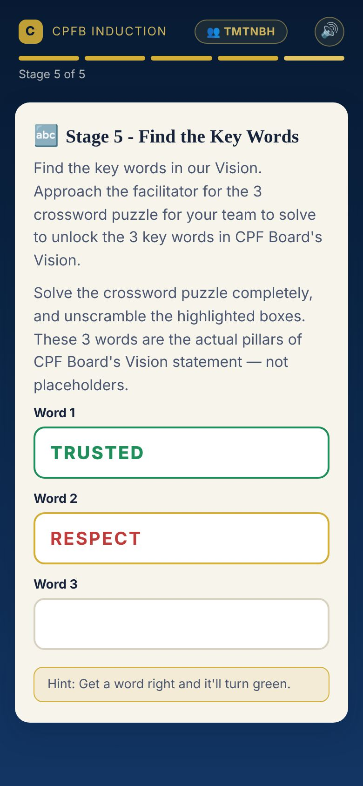
🎉 Finale · Slides reconstructed
- See both rebuilt slides: the founding date, their logo drawing and the mission, then the vision and the numbers.
- See "Completed by" with their team name, their time and the date.
- Are told to show the screen to you.
- Write down the team name and time. Nothing else records it.
- If you want to keep the logo drawings, take a screenshot or a photo of the screen now.
- Only then tap Reset for Next Team. It wipes the time and the photo from that phone.
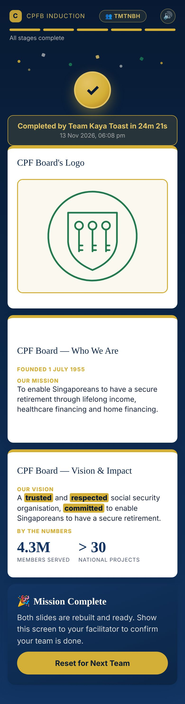
5Answer key
Kept closed so it is not on screen by accident. Answers are not case-sensitive.
Show all answers
| Stage | Answer | How it is reached |
|---|---|---|
| 1 · Passcode | 0107 | Shapes are worth their number of sides, and a circle is 1. 54 + 53 = 107. Read as a date it is 1 July, the day the Board was founded in 1955. |
| Password | SECUREFUTURE | On the note inside the lock. |
| 2 · Email from IT Support | MISSION | First letter of each of the seven paragraphs. |
| 2 · Email from Mr Tang | VISION | First letter of each of the six paragraphs. |
| 3A · Departments | PCM HCA NED RWD SLD | Exactly these five. The other 16 codes are decoys, and several differ by one letter (RWG, SLG, NDD). |
| 3A · Mission statement | To enable Singaporeans / to have a secure retirement / through lifelong income, / healthcare financing / and home financing. | |
| 4A · Members | 4.3 | From the tool you hand out. Slide text: "serves 4.3 million members". |
| 4B · Projects | 30 | Shown when the ball reaches the goal in the Code Maze. Slide text: "over 30 national projects". |
| 5 · Key words | TRUSTED RESPECTED COMMITTED | One from each crossword, in any order. Vision: "A trusted and respected social security organisation, committed to enable Singaporeans to have a secure retirement." |
content.js. If you change the lock code or the password there, change the physical lock and the note to match.6Optional: Data Run
A separate mini-game that is not part of the five stages. Use it as a side challenge or a tie-breaker, or leave it out.
One team member "runs to a far-away storeroom" by reaching a count of 500 on the phone. There are two modes:
The phone counts real steps or shakes with its motion sensor. Needs space to move.
Tap RUN to count, and react to JUMP, DUCK and DODGE obstacles. A missed obstacle costs a time penalty. No space needed.
Finishing shows a certificate with the time and a code, 1955. The phone keeps a list of its own fastest times. Nothing in the main game asks for that code, so decide beforehand what a fast time earns. Open it at data-run/.
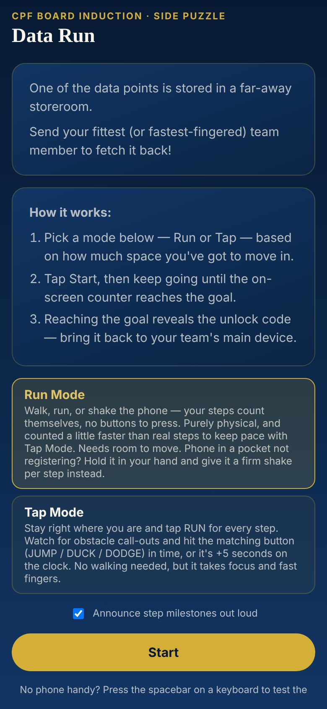
7Hidden controls
Things the app can do that participants are not told about.
| Where | Do this | What happens |
|---|---|---|
| Any game screen | Tap CPFB Induction at the top left 10 times quickly | Asks to confirm, then clears all progress on that phone |
| Welcome and invite screens | Tap the small Facilitator: reset progress link at the bottom | Same reset, with a confirmation |
| Final screen | Tap Reset for Next Team | Same reset, with a confirmation |
| Game link | Add ?reset=1 to the end of the address | Resets at once, with no confirmation. Handy as a "clean start" QR code for your own use. |
| Any game screen | Tap the 👥 CODE badge at the top | Shows the invite QR code and room code again |
| Any game screen | Tap 🔊 at the top right | Reads the screen aloud. Tap again to stop. Only shown on phones that support it. |
| Follow page | Tap Follow a different team | Forgets the current room and asks for a new code |
| Code Maze | Tap ↺ on the maze | Recalibrates "level" to how the phone is held right now |
| Code Maze | Tick Show sensor debug values, or use ← ↑ ↓ → on a laptop | Shows the raw tilt readings, or lets you test the maze without a phone |
| Data Run | Press Space on a laptop | Counts a step, for testing without a phone |
8Between teams and after
Progress lives on each leader's phone. A phone that has finished, or half-finished, must be reset before it is used again.
Between teams
- Record the team name and time from the final screen.
- Tap Reset for Next Team. The phone returns to the welcome screen.
- The next team gets a new room code. Teammates who followed the previous team should scan the new QR code, or tap Follow a different team.
- Reset the props: relock the lock with the note inside, and collect the Stage 4A tool, the maze device, the crosswords and the drawings.
After the session
- Nothing personal is kept. There is no login. The only things stored online are each room's code, team nickname and current stage number.
- Photos never leave the phone. The logo photo is saved only in the leader's browser and is erased by a reset.
- Times are not collected anywhere. Your own note of each team's time is the record.
- Old rooms pile up harmlessly in the Firebase project. They can be deleted from the Firebase console under Firestore, in the
roomscollection, whenever you like.
9Troubleshooting
| Problem | What to do |
|---|---|
| The game opens in the middle of a stage, or on someone else's final screen | The phone still holds an earlier run. Reset it: tap CPFB Induction 10 times, or use the reset link on the welcome screen. |
| The invite screen says "Setting up your team's room…" and no QR code appears | The phone cannot reach the live service. Check its connection. The team can still start and play on the one phone. If the room code appears later, the badge at the top shows the QR code. |
| A follower sees "Room not found" | Recheck the code. Codes are 6 characters and never contain the letters I, L or O, or the digits 0 or 1. Scanning the leader's QR code avoids typing. |
| A follower is stuck on "Connecting…" or an old stage | Check the follower's connection and reload the page. If several followers lag, the leader's phone has lost its connection. It catches up at the next stage change. |
| Followers hear no chime | They need to tap their screen once after joining, and take the phone off silent. The page still updates without sound. |
| The team switched to a different phone, or the leader's phone died | Progress does not move between phones. Start on the new phone and re-enter the answers so far using the answer key. The clock restarts, so adjust their time by hand. |
| The leader closed the tab or locked the phone | Nothing is lost. Reopen the same link in the same browser and the game resumes where it was. |
| The camera will not open at Stage 3B | Camera access was refused. Allow it in the browser's site settings and tap Open Camera again. |
| The Code Maze ball does not move | Motion access was not allowed. Reload the maze, tap Start and choose Allow. If it still fails, try another phone. |
| The Code Maze ball drifts to one side | Hold the device level and tap ↺. |
| A screen says "Something went wrong showing this puzzle" | Tap Reset My Progress on that screen, then re-enter the answers so far. |
| A team cannot find their second task | Stages 3 and 4 have a second card below the first. Ask them to scroll down. |
10How this app was built
The escape room was described in plain English and written by an AI coding assistant. Every change in the project's history, about 60 of them between 27 August and 13 November 2026, was made by the assistant. The human side was deciding what the game should be, playing it on real phones, running it with a real team, and saying what to change.
The toolkit
The AI coding assistant. It wrote all of the code, tested it in an automated browser, and took the screenshots on this page.
A small online database. It holds each team's room code and stage number so teammates' phones can follow live.
Stores every version of the files and serves them as a website. There is nothing to install and no server to run.
Tilt, shake and camera features cannot be judged from a desk. Each was tuned from what happened on an actual phone.
The game itself is a handful of plain files: a page, a stylesheet, a script and one file of content. It needs no build step, and only the live following needs a connection once the page has loaded.
Then and now
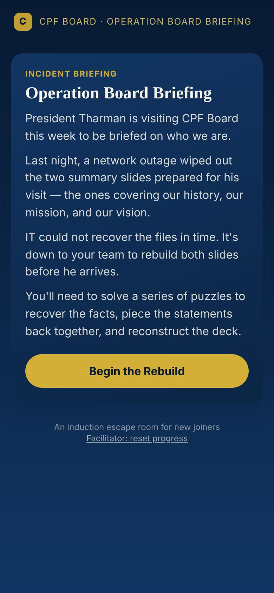
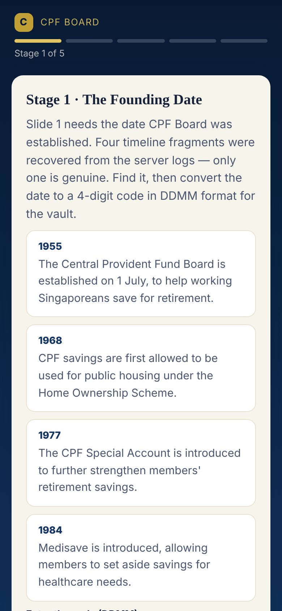
The journey, step by step
- 27 Aug First playable version: briefing, five stages and the two rebuilt slides. The same day, Stage 1 became a shape puzzle, the real-departments check was added before the mission statement, and wording that gave answers away was removed.
- 29 Aug The room became physical. The logo drawing and photo were added, Stage 4 was split into two facilitator-led challenges, and Stage 5 changed from on-screen anagrams to paper crosswords. Team names, the completion stamp, the read-aloud button and the hidden reset arrived too.
- 30 Aug The Code Maze was built as its own page for a second phone and became Stage 4B. Real department codes replaced placeholders.
- 31 Aug Data Run was built and tuned over about a dozen rounds of phone testing: step detection, the two modes, and balancing them so neither is clearly faster.
- 12 Oct After the first full run with a team, one concern stood out: a single person was doing all the reading. Live following was added, with a room code, an invite QR code and a read-only page for teammates.
- 21 Oct A test pass for bugs and spacing. Each stage got its own icon and a line on why its answer matters, and Stage 3A's fixed hint became a count of correct picks.
- 6 Nov Followers began seeing Stage 4's answers once the leader confirms them.
- 9 Nov One box per digit for the Stage 1 code, a more celebratory final screen, and the invite screen that holds teams until the facilitator's signal.
- 13 Nov This guide.
Build your own: a starter recipe
- Write the story and the facts first. What should people know by the end? Each puzzle here exists to deliver one fact.
- Ask for the simplest thing that runs on a phone. A single web page with no installation, and all wording and answers kept in one file you can edit.
- Put it online early. Turn on GitHub Pages so every change is a link you can open on your phone a minute later.
- Play it yourself after every change, and describe what you saw in plain words, with a screenshot where you can.
- Let props do the fun part. The app only checks answers. Locks, drawings, crosswords and a tilting device are what people remember.
- Run it once with a real team before adding anything else, and fix what you observe.
- Ask for a sketch before a big change. Two redesign ideas for this app were mocked up, looked at, and dropped without touching the game.
Example prompts from this build
Real requests from the conversation, lightly tidied.
Lessons learned
- Watch a real team play. The biggest feature, live following, came from one observation in the first run.
- People do not scroll. Teams kept missing the second task in Stages 3 and 4. A notice on screen helps, and a word from the facilitator helps more.
- Sensors need real hands. The step counter first counted while the phone was simply being held, and was recalibrated from real readings.
- Keep the story intact. Explanatory lines that sounded like a textbook were cut because they broke the feeling of racing to rebuild the slides.
- Hints should narrow, not tell. "3 of your 5 are correct" keeps a team thinking where naming the wrong ones would not.
- Check the venue's network. Live following needs the phones to reach an outside service. The game is built to carry on without it.
- Say no to ideas that do not look right. A side-by-side layout for the split stages was mocked up and rejected in one line.
content.js to see how the wording and answers are kept apart from the code.